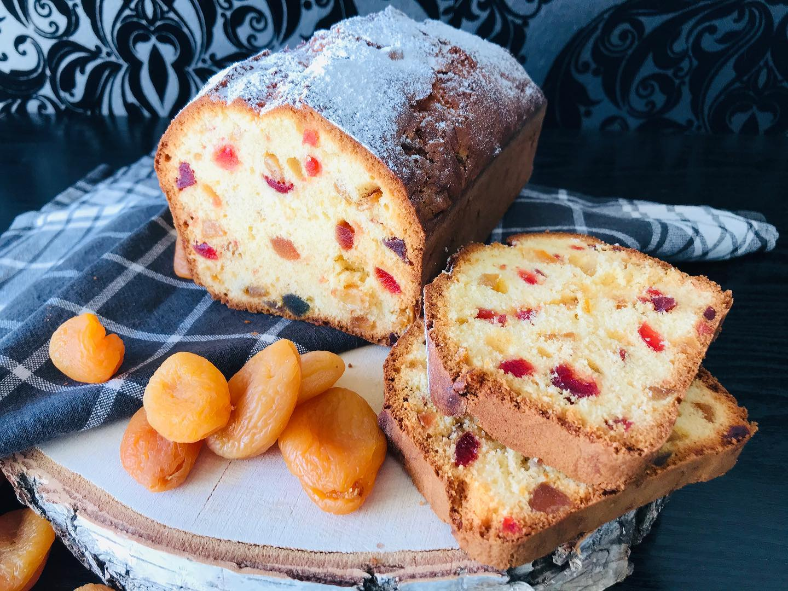

Biskupský chlebíček podľa @sladka.malinka.cakes — Normy Jedál
2hý den v confinement..., a už to začíná! 😅 Zase se peče! 👩🏻🍳🤩🍑🍒🍊🥧
Dnes Biskupský chlebíček..., už jen polít čokoládou a bude hotovo! 😋🍫
#mycake #mapassion #biskupskychlebicek #czechfood #dorty #zakusky #cakes #cake #gateau #sweet #patiserie